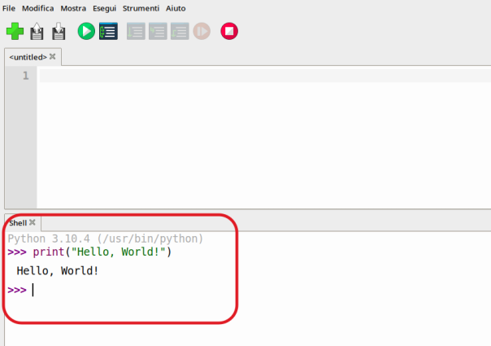

Prime cose
In questo primo capitolo cercheremo di fare semplicemente i primi passi con il linguaggio di programmazione Python e le prime esperienze con l'IDE Thonny. la cosa più semplice (e intelligente) per capire è provare a fare insieme!
Quando si comincia a studiare un nuovo linguaggio, il primo programma che si scrive di solito è il cosiddetto "Hello, World!". È un semplice programma che scrive semplicemente "Hello, World!", ma in realtà serve per fare un numero incredibile di cose:
- familiarizzare con l'IDE, il nuovo ambiente di programmazione
- provare a scrivere un primo programma
- riuscire nella fase di compilazione/interpretazione/esecuzione del codice
- conoscere l'istruzione principale di output
- superare psicologicamente...
Hello World Programs
Gli Hello World sono programmi che scrivono (o mostrano) semplicemente la scritta "Hello, World!".
Tutti i linguaggi di programmazione hanno il loro HelloWorld... sembra una cavolata, ma cominciare con il semplice senza sottovalutarlo e assicurandosi di avere tutto chiaro (fino a lì) è sicuramente un'ottima strategia di apprendimento.
Noi proveremo a scrivere addirittura due HelloWorld!!! Infatti, essendo Python un linguaggio interpretato, è possibile accedere direttamente all'interprete Python ed eseguire codice riga per riga, oppure creare un modulo, ovvero un file di testo in cui si scrive codice Python e lo si salva con estensione .py.
Cominciamo con l'interprete.
L'interprete Python
Per accedere all'interprete Python, basta aprire Thonny e guardare in basso! Se l'interprete non è aperto, attivarlo dal menù come da immagine.
L'interprete si mostra con il suo tipico prompt fatto con i 3 maggiori >>>. Quando vedete il prompt significa che l'interprete è pronto a ricevere
ed eseguire i vostri comandi. A questo punto basta digitare l'istruzione print("Hello, World!") come nell'immagine seguente:

Tutto qui! Primo livello superato :)
Potete usare il prompt per eseguire una o più righe di codice e vedere che cosa succede, potete usarlo come calcolatrice, potete... farci tutto quello che Python è in grado di fare (tanta roba) in maniera... un pò scomoda (ma adatta a fare prove, a valutare comandi, etc...). Ecco alcuni esempi di utilizzo dell'interprete. Le spiegazioni arriveranno (tutte!!!) successivamente. Per adesso... imparate provando!
>>> print("Ciao")
Ciao
>>> 3 + 5
8
>>> 5 / 5
1.0
>>> type(1.0)
<class 'float'>
>>> type(1)
<class 'int'>
>>> numero = 5 * 2
>>> numero
10
>>> numero = numero / 4
>>> print(numero)
2.5
Moduli Python (file .py)
Praticamente la cosa più difficile che abbiamo visto finora è che Python chiama i suoi file di codice (in programmazione si dicono file sorgente) con il nome di moduli. Per creare un modulo, ovvero un file con estensione .py, basta aprire Thonny, scrivere nell'editor un pò di codice e premere SALVA!
Noi molto semplicemente proveremo di nuovo con un HelloWorld! Scrivete ancora il seguente codice:
Poi premete F5 per avviare l'esecuzione. Thonny prima di eseguire un modulo, salva su file le modifiche che avete fatto! Se non avete ancora salvato nulla, parte la procedura di salva con nome:
Tutto qui!
Istruzione print
La prima istruzione che abbiamo incontrato è la classica print().
Serve per visualizzare i suoi argomenti!
>>> print("Ciao")
Ciao
>>> print("Ciao","a tutti")
Ciao a tutti
>>> print("Ciao", 'ciao', "ne")
Ciao ciao ne
Non mi sembra molto complicato...
- Potete scrivere quante robe volete
- Ogni cosa va tra apici, singoli o doppi... basta che ci sia coerenza
- Per scrivere più cose basta separarle nella print con una virgola e poi queste verranno scritte con uno spazio di separazione
Commenti al codice
Se abbiamo paura di dimenticarci qualcosa... oppure vogliamo spiegare una o più righe di codice in italiano, possiamo utilizzare i commenti!
# Questo è un commento
# serve a spiegare in italiano alcune cose...
# ad esempio:
# l’istruzione print() visualizza sullo schermo il suo contenuto
print("Hello, World!")
Come vedete, ogni commento inizia con un # e fino a fine riga potete scrivere ciò che volete.
I commenti semplificano il lavoro di rilettura del codice, soprattutto quando le righe di codice si avvicinano pericolosamente alle centinaia. Inoltre, cosa ancora più importante, piacciono al vostro prof! Quindi scriveteceli! Sempre! Spiegate in ogni porzione di codice l'idea che vi frulla in mente e quello che volete fare per realizzarla!
Esercizi
Per ognuno dei seguenti quesiti, creare un modulo (un file .py) per eseguire la richiesta dell'esercizio. Tipicamente i file degli esercizi si chiamano esNUMERO.py, ad esempio es1.py oppure es001.py
e nelle prime righe si trova (come commento) il nome di chi lo ha svolto e una descrizione dell'esercizio. Una cosa tipo:
Esercizio 1
Visualizzare sullo schermo la scritta seguente:
Esercizio 2
Visualizzare sullo schermo la scritta seguente (andando a capo quando necessario):
Esercizio 3
Visualizzare sullo schermo il seguente disegno:
Esercizio 4
Visualizzare sullo schermo il seguente disegno: